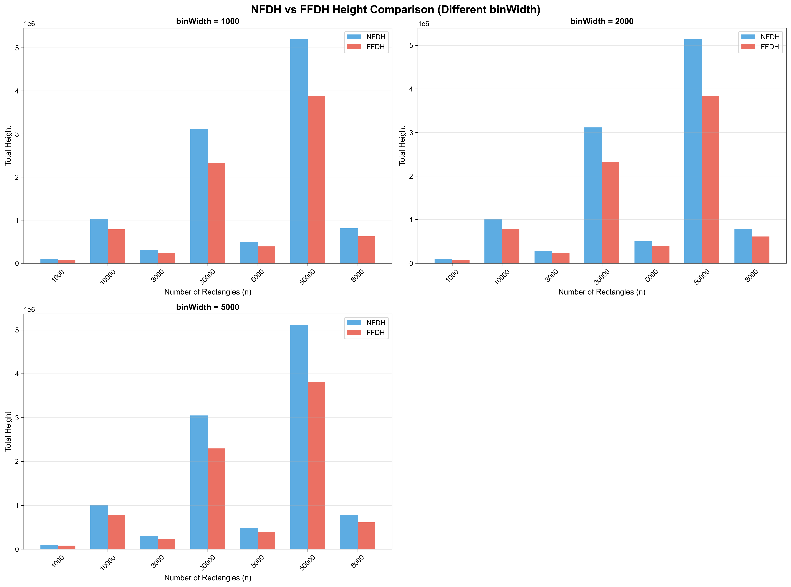
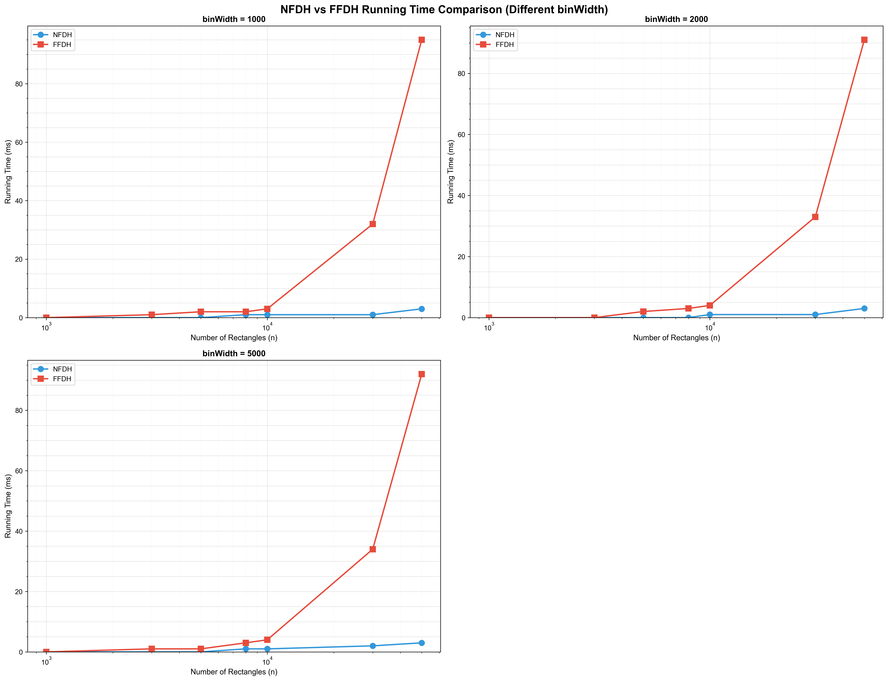
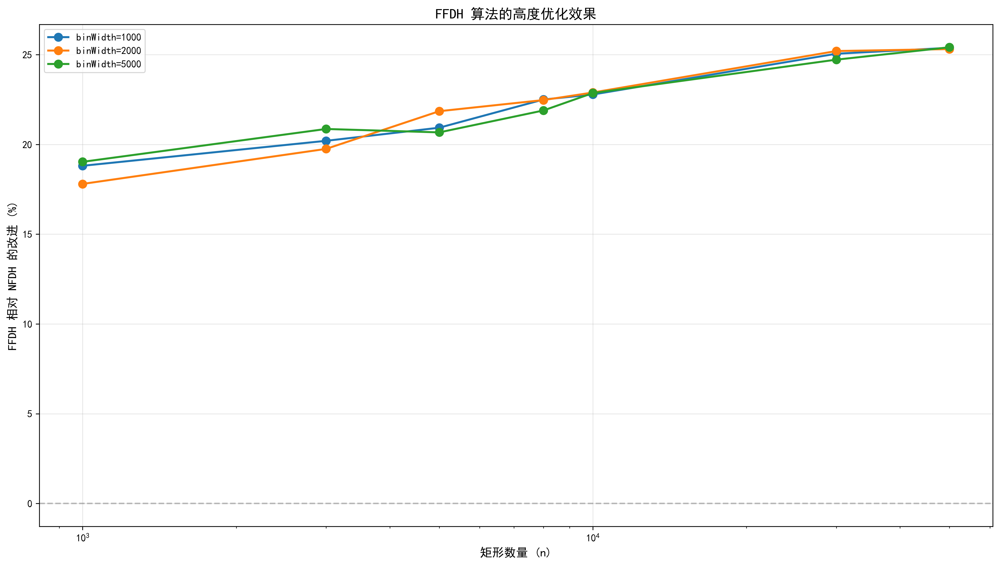

📊 Texture Packing 算法测试报告
测试概览
- 测试样例总数: 21 个
- binWidth 取值: 1000, 2000, 5000
- 矩形数量范围: 1000 ~ 50000
- 测试算法: NFDH (Next Fit Decreasing Height) vs FFDH (First Fit Decreasing Height)
📈 1. 高度对比

⏱️ 2. 运行时间对比

🎯 3. FFDH 算法改进效果

📋 4. 详细测试数据
| binWidth |
n |
NFDH_Height |
NFDH_Time |
FFDH_Height |
FFDH_Time |
Height_Improvement_% |
| 1000 |
1000 |
95888 |
0.0 |
77855 |
0.0 |
18.81 |
| 1000 |
10000 |
1016408 |
1.0 |
784821 |
3.0 |
22.78 |
| 1000 |
3000 |
299953 |
0.0 |
239352 |
1.0 |
20.20 |
| 1000 |
30000 |
3109031 |
1.0 |
2330112 |
32.0 |
25.05 |
| 1000 |
5000 |
492235 |
0.0 |
389205 |
2.0 |
20.93 |
| 1000 |
50000 |
5198569 |
3.0 |
3878967 |
95.0 |
25.38 |
| 1000 |
8000 |
806917 |
1.0 |
625385 |
2.0 |
22.50 |
| 2000 |
1000 |
94967 |
0.0 |
78062 |
0.0 |
17.80 |
| 2000 |
10000 |
1012342 |
1.0 |
780591 |
4.0 |
22.89 |
| 2000 |
3000 |
284736 |
0.0 |
228495 |
0.0 |
19.75 |
| 2000 |
30000 |
3115245 |
1.0 |
2330253 |
33.0 |
25.20 |
| 2000 |
5000 |
502267 |
0.0 |
392517 |
2.0 |
21.85 |
| 2000 |
50000 |
5139270 |
3.0 |
3838305 |
91.0 |
25.31 |
| 2000 |
8000 |
791763 |
0.0 |
613826 |
3.0 |
22.47 |
| 5000 |
1000 |
96446 |
0.0 |
78094 |
0.0 |
19.03 |
| 5000 |
10000 |
998011 |
1.0 |
769880 |
4.0 |
22.86 |
| 5000 |
3000 |
297932 |
0.0 |
235773 |
1.0 |
20.86 |
| 5000 |
30000 |
3049149 |
2.0 |
2295403 |
34.0 |
24.72 |
| 5000 |
5000 |
487101 |
0.0 |
386437 |
1.0 |
20.67 |
| 5000 |
50000 |
5110137 |
3.0 |
3811699 |
92.0 |
25.41 |
| 5000 |
8000 |
781662 |
1.0 |
610577 |
3.0 |
21.89 |
📊 5. 统计摘要
|
平均改进% |
最小改进% |
最大改进% |
NFDH平均时间(ms) |
FFDH平均时间(ms) |
| binWidth |
|
|
|
|
|
| 1000 |
22.236 |
18.81 |
25.38 |
0.857 |
19.286 |
| 2000 |
22.181 |
17.80 |
25.31 |
0.714 |
19.000 |
| 5000 |
22.206 |
19.03 |
25.41 |
1.000 |
19.286 |
生成时间: 2025-12-08 21:52:31